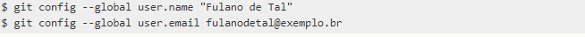
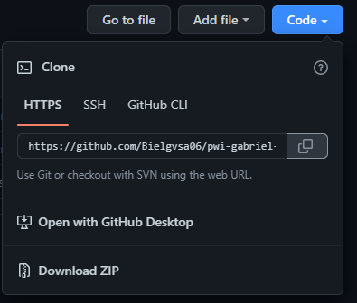
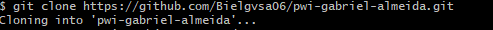
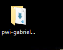
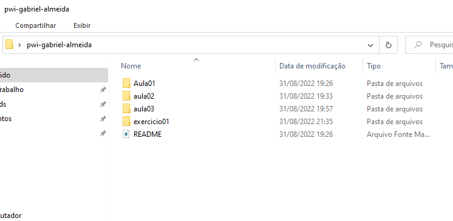

UTILIZAÇÃO DO GITHUB
Primeiro passo - Acessar o arquivo através do git
Antes de tudo, precisamos criar o nosso repositório no github.com com nossa conta.

Após isso, faremos a instalação do gitbash e utilizaremos ele para receber
e enviar os arquivos que produzimos no repositório.

Segundo passo - Comandos do gitbash
No git bash, faremos a configuração inicial acessando o link de nosso repositório e utilizando os seguintes comandos:

Link do repositório github

É necessário usar "git clone -link copiado-" para receber o seu repositório.
Após isso, será criada uma pasta no local aonde abrimos o git bash.

Nesta pasta poderemos usar para guardar nossas páginas html, junto
com os estilos css e imagens que forem utilizadas.

Para verificar os arquivos que há na pasta, como arquivos novos e atualizações, podemos utilizar o comando 'git status'.
Quando há novos arquivos e queremos fazer o envio para o repositório, há 2 comandos para proceder. Um deles é o git commit -m "Insira uma observação", que serve para endereçar e botar observações sobre o arquivo.
Após isso e verificar com 'git status', é possível fazer o envio com o comando 'git push'.